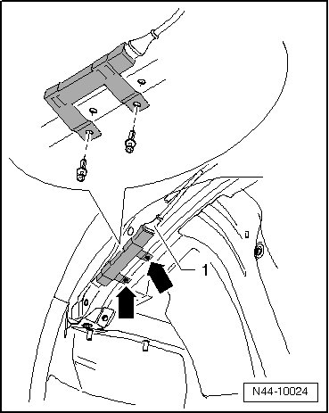

Front Tire Pressure Monitoring Antenna
Front Tire Pressure Monitoring Antenna
Removing
The front tire pressure monitoring antennas are installed behind the wheel housing liners on the longitudinal control arm.
- Switch ignition off.
- Remove wheel housing liner.
- Disconnect connector - 1 -.

- Remove the expanding rivets - arrows - and remove the front tire pressure monitoring antenna.
Installing
- Install the front tire pressure monitoring antenna and secure it with new expanding rivets - arrows -.
- Connect harness connector - 1 -.
- Install wheel housing liner.